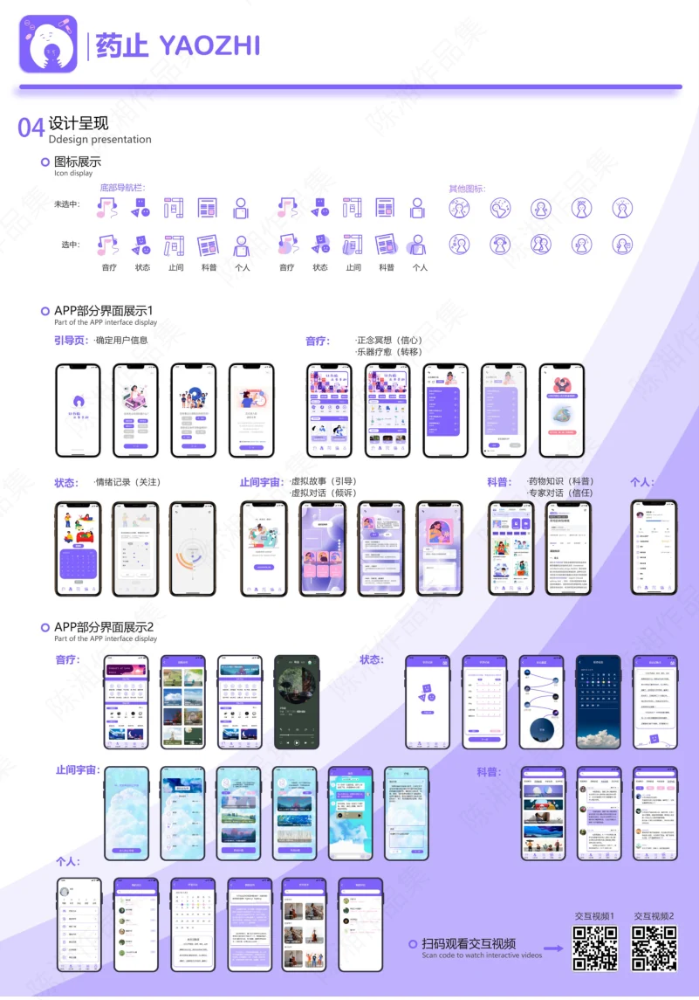
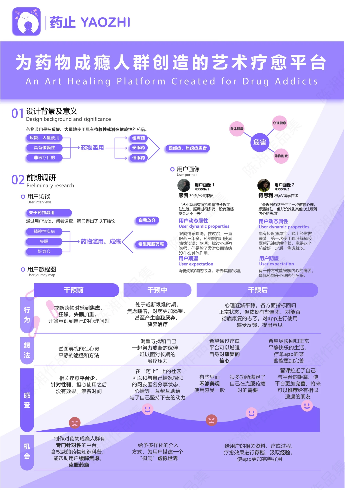
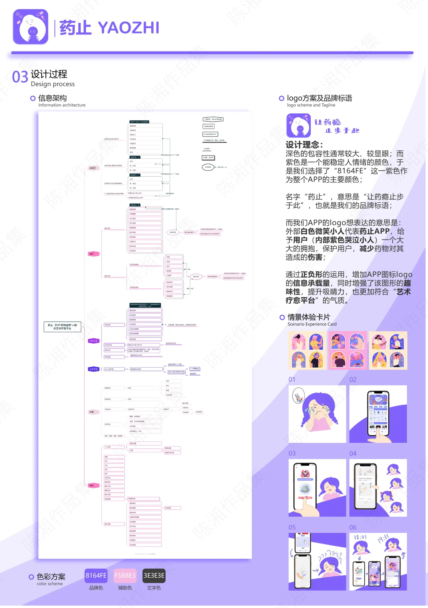
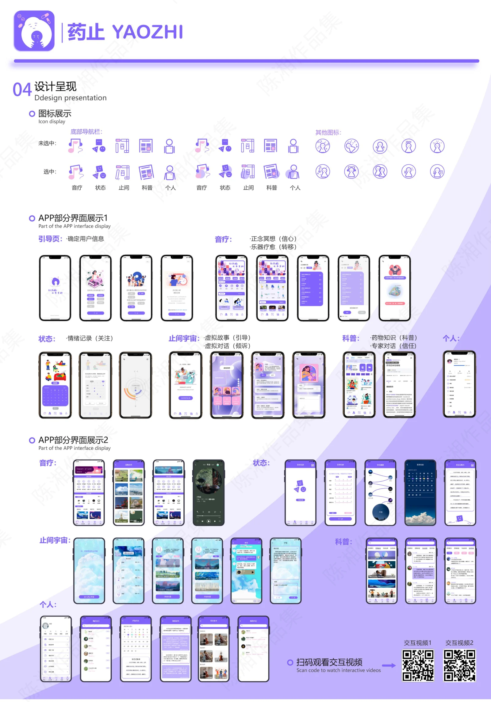

PROJECT 01 / YAOZHI
药止 · 艺术疗愈平台
以艺术体验与同伴支持回应药物成瘾人群的情绪需求。

MY CONTRIBUTION / 个人参与
团队成员。参与对 4 名不同类型学生的访谈、提纲设计、录音整理及问卷收集分析，协作完成用户画像与用户旅程图；提出社区交流功能构思。
从情绪支持切入
展板以药物成瘾人群为关注对象，围绕情绪困扰、陪伴和支持需求展开平台概念设计。方案用艺术体验与社区交流组织内容，不将概念方案视为已获验证的治疗手段。
研究与功能构思
结合访谈与问卷整理用户画像、用户旅程，识别不同阶段的情绪与支持需求。个人参与部分包括提出状态、心情分享与相互鼓励的社区交流方式，纳入团队平台方案。
界面与信息架构
展板呈现信息架构、紫色品牌系统、情景体验卡片及音乐、状态、科普等界面。以下为团队方案展板，个人职责以简历列明的调研和功能构思为准。
PROCESS / 设计过程与展板
CLICK TO VIEW FULL SIZE本页展示团队概念方案；个人参与部分见上方说明。图片可点击放大查看，保留原稿内容与水印。



内容来源：《陈湘作品集（展板）》第 7 页；《陈湘_产品实习简历》项目经历。未明确的项目时间、个人分工及落地结果未作推断。